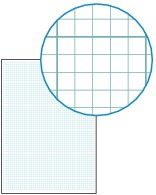

You can print various template forms such as notebook paper, graph paper, etc., with the machine.
For details, refer to the on-screen manual: Advanced Guide.
To print template forms with the machine, press the Setup button, then select Template print.
See Selecting a Mode.
Two examples of template forms you can print are shown below.
 |
|
Notebook paper |
Graph paper |